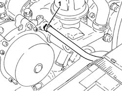
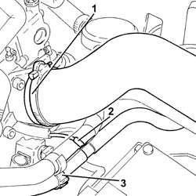
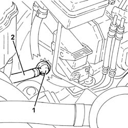
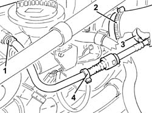

3330D26 Vacuum PIPE for brake servo assembly - R.R.
- Path
- Procedures > 33 BRAKING SYSTEM > 3330 HYDRAULIC BRAKING SYSTEM > 3330D brake vacuum system > 3330D26 Vacuum PIPE for brake servo assembly - R.R.
- Kind
- repair procedure (removal / refitting; the operation number is the code)
- Applies to
- engines: 1.9 JTD 16v, 2.4 JTD 20v; all production periods
- Interactive page
- https://sloeber94.github.io/elrnDB-a156/en/#/3238080
Applies to: engines: 1.9 JTD 16v; all production periods
 Removing
Removing
 Refitting
RefittingProceed with removal 1016A10 sound-proofing cover - r + r .
1. Loosen the band and disconnect the brake servo vacuum pipe from the vacuum unit.

Applies to: engines: 1.9 JTD 16v; all production periods
1. Loosen the band and disconnect the air intake hose from the connector on the throttle casing.
2. Disconnect the vacuum intake pipe for the vacuum reservoir from the T connector on the brake servo vacuum pipe.
3. Release the vacuum pipe for the brake servo from the retaining band.

Applies to: engines: 1.9 JTD 16v; all production periods
1. Disconnect the brake servo vacuum pipe complete with one-way valve from the brake servo.
2. Remove the brake servo vacuum pipe.

Applies to: engines: 1.9 JTD 16v; all production periods
Refitting
RemovingPlace the brake servo vacuum pipe back in its housing.
Connect the brake servo vacuum pipe to the brake servo one-way valve.
Secure the vacuum pipe for the brake servo to the securing band.
Connect the vacuum intake pipe for the vacuum reservoir to the T connector on the brake servo vacuum pipe.
Connect the air inlet hose to the connector on the throttle casing and tighten the band.
Connect the brake servo vacuum pipe to the vacuum unit and tighten the band.
Proceed with refitting 1016A10 sound-proofing cover - r + r .
Applies to: engines: 2.4 JTD 20v; all production periods
Removing
RefittingProceed with removal 1016A10 sound-proofing cover - r + r .
Proceed with removal 5530B10 battery - r+r .
1. Loosen the band and disconnect the brake servo vacuum pipe from the vacuum unit.
2. Loosen the band and disconnect the air intake hose from the connector on the throttle casing.
3. Disconnect the vacuum intake pipe for the vacuum reservoir from the T connector on the brake servo vacuum pipe.
4. Release the vacuum pipe for the brake servo from the retaining band.

Applies to: engines: 2.4 JTD 20v; all production periods
1. Disconnect the brake servo vacuum pipe complete with one-way valve from the brake servo.
2. Remove the brake servo vacuum pipe.
Applies to: engines: 2.4 JTD 20v; all production periods
Refitting
RemovingPlace the brake servo vacuum pipe back in its housing.
Connect the brake servo vacuum pipe to the brake servo one-way valve.
Secure the vacuum pipe for the brake servo to the securing band.
Connect the vacuum intake pipe for the vacuum reservoir to the T connector on the brake servo vacuum pipe.
Connect the air inlet hose to the connector on the throttle casing and tighten the band.
Connect the brake servo vacuum pipe to the vacuum unit and tighten the band.
Proceed with refitting 5530B10 battery - r+r .
Proceed with refitting 1016A10 sound-proofing cover - r + r .